El botó «Guardioles» porta a la llista i al detall.
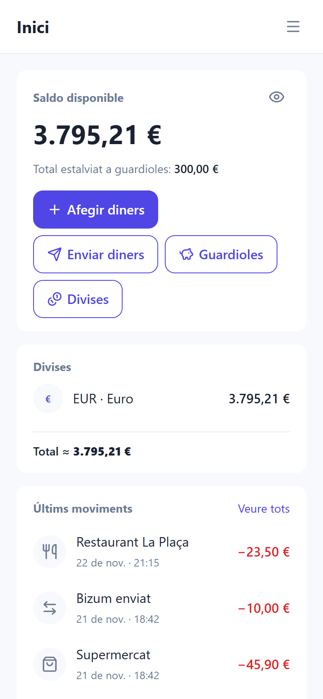
«Aportar» i «Retirar» en una fila.
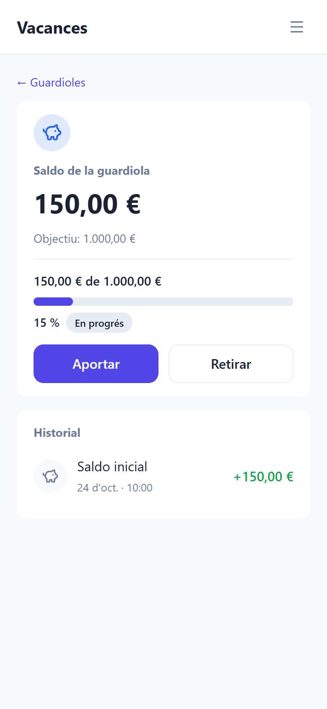
«Confirmar» desactivat i cap missatge.
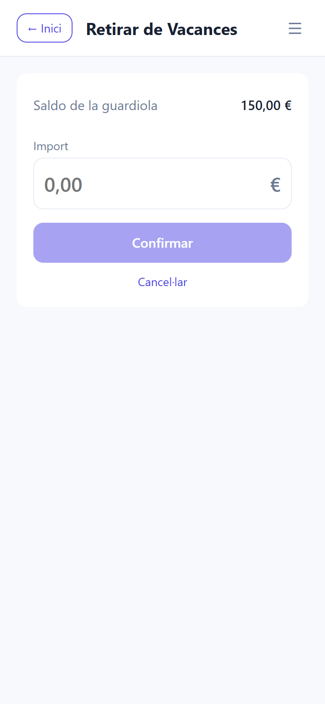
«L'import ha de ser més gran que 0.».
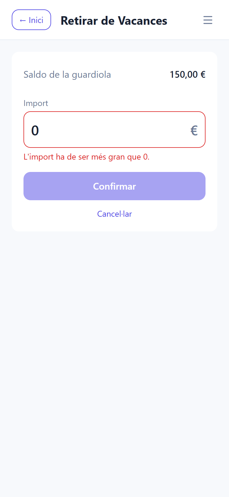
Error i «Confirmar» desactivat.
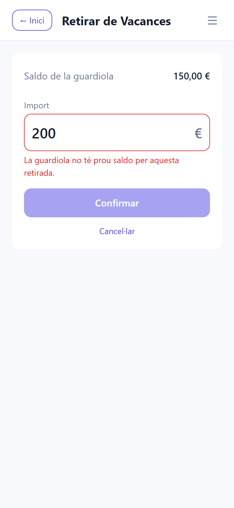
«Confirmar» actiu.
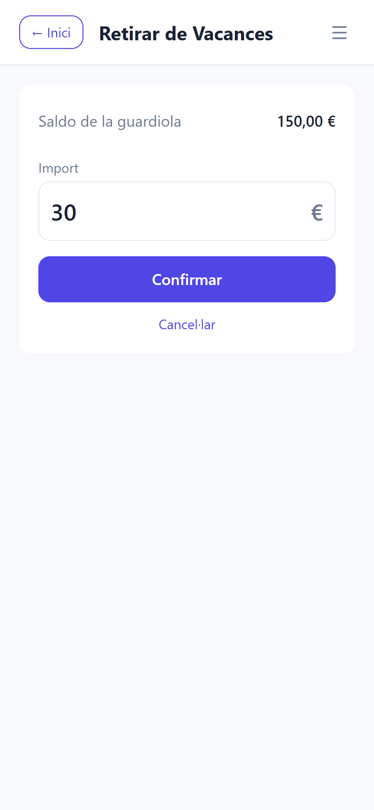
Missatge vermell sota el botó i l'import es queda.
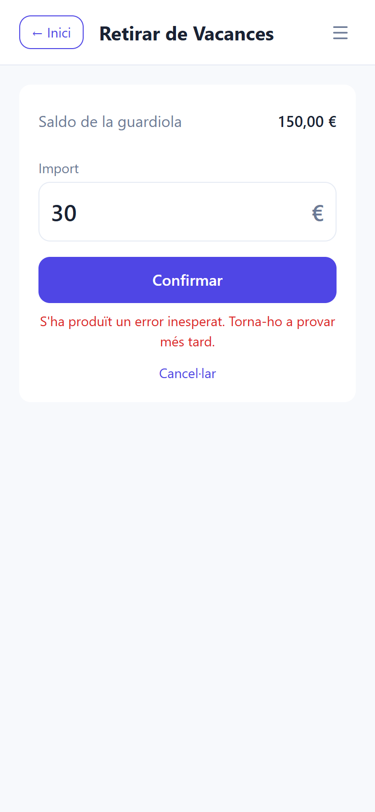
«Has retirat 30,00 € de Vacances» i els dos saldos.
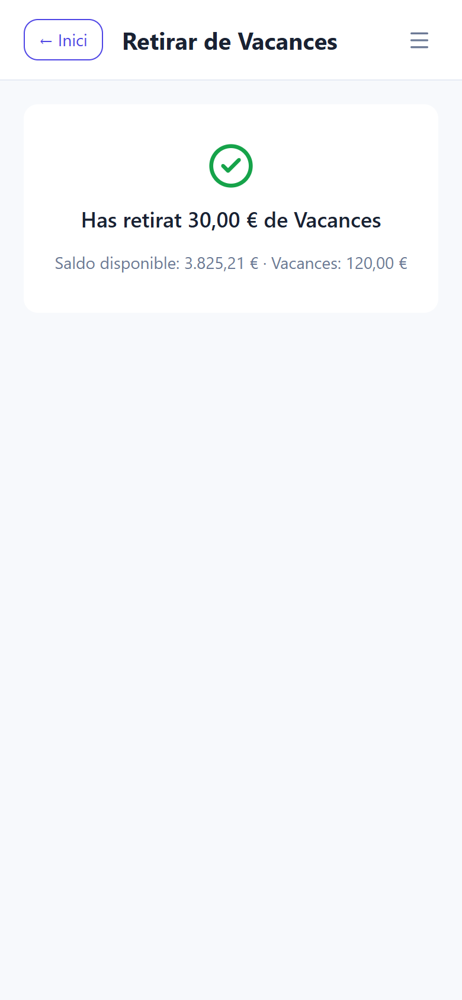
120,00 € i la retirada «−30,00 €» a l'historial.
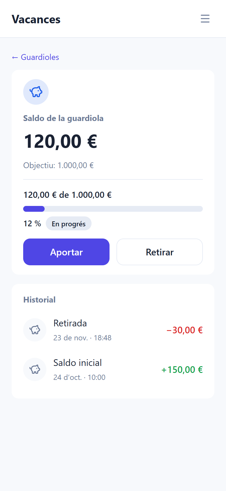
Cap saldo canvia; «Tornar a la guardiola».
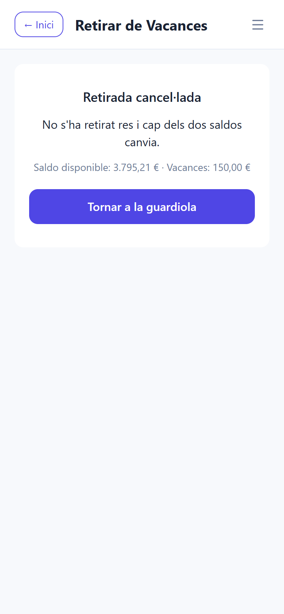
«Retirar» gris i desactivat.
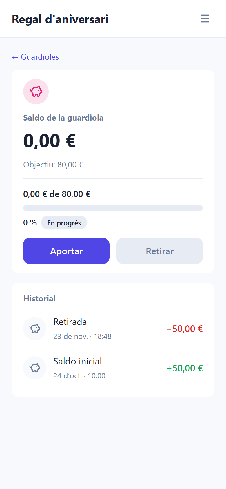